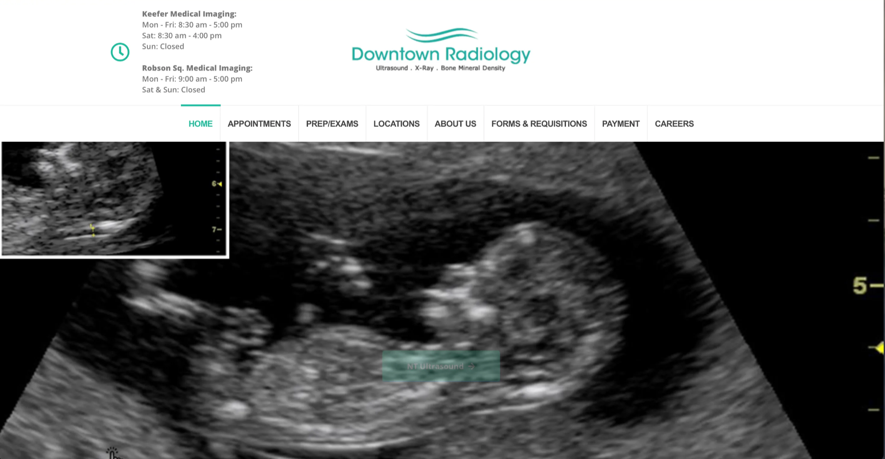

Downtown Radiology Digital Redesign
Human-Centered UX Research & Service Design for a Clinical Booking Transformation

Project Overview
A trusted Vancouver imaging clinic relied on phone- and fax-based booking for over 30 years. I led the redesign of its digital presence to introduce a modern, accessible booking experience while preserving the clinic’s approachable, trusted identity.
My Role & Responsibilities
- Led end-to-end UX/UI design for the clinic's digital transformation
- Designed patient portal for appointment booking and result viewing
- Conducted user research with patients and healthcare providers
- Developed design systems for consistent healthcare interfaces
Key Challenges
How can we modernize appointment booking and improve communication without disrupting established clinical workflows?

Approach (Lean, research-driven)
- Spoke with staff, radiologists, and referring physicians to map constraints
- Surveyed patients to understand expectations and tech familiarity
- Defined key personas (seniors, physicians, walk-ins)
- Benchmarked healthcare booking systems
- Restructured information architecture to reduce friction
Design Solutions
Mobile-first booking prototype (simple 3-step flow)
Clear CTA hierarchy (Book • Referral Upload • Location & Hours)
Service icons + preparation guidance
Updated visual materials aligned with the existing brand


Outcomes
- Prototypes prepared for phased implementation
- Staff confidence increased toward digital workflows
- Foundation established for future online booking rollout

Findings After MVP test
- Streamlined appointment booking process, reducing phone calls by 40%
- Improved patient satisfaction with clear result presentation
- Enhanced staff efficiency with intuitive internal tools
- Implemented WCAG AA accessibility standards